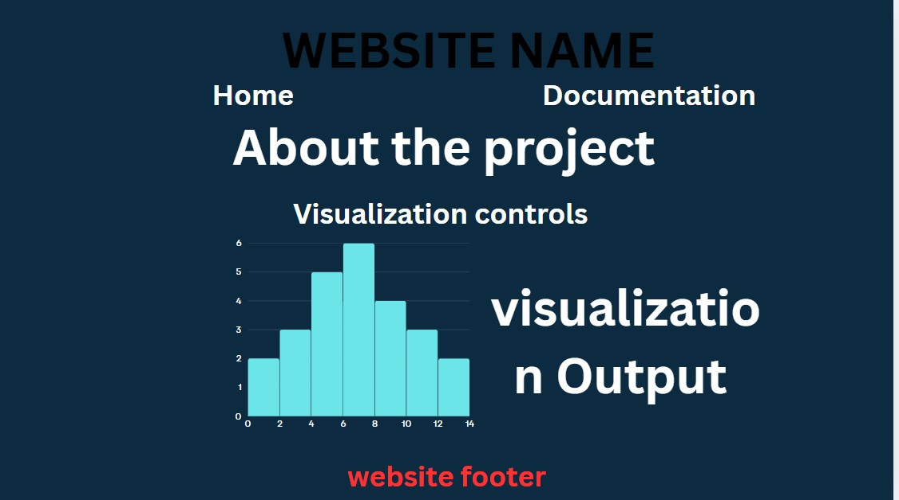
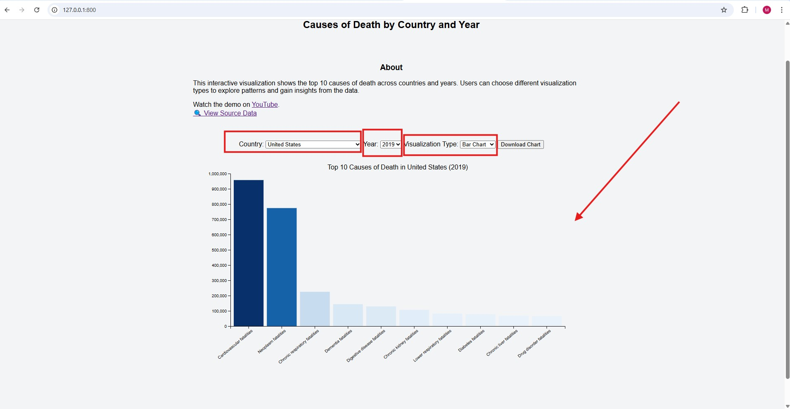

The design process began with exploratory data analysis of the causes-of-death dataset to understand its structure, including the columns for year, country, and death counts by cause. I sketched a few layout ideas by hand, initially considering pie charts and stacked bar charts. However, these early designs proved limiting in terms of scalability and comparative clarity.
After researching common D3.js patterns and assessing user interactivity needs, I narrowed the visualization types to three core formats: bar chart (for year-specific comparisons), line chart (to observe trends over time), and scatterplot (for pattern recognition without imposing order). These decisions were driven by a desire to let users explore the data from multiple perspectives in an intuitive and engaging way.
Color Scheme: I used a sequential blue color scale (d3.interpolateBlues) to encode value magnitude. This choice was made to maintain consistency across visualization types while clearly differentiating low and high death counts.
Layout & Controls: Dropdown menus allow users to dynamically select the country, year, and visualization type. This approach supports user-driven inquiry and accommodates a wide range of comparative scenarios. Axis labels and tooltips ensure interpretability. Labels on the x-axis were rotated to prevent text overlap, especially for cause-of-death names.
Chart Types:
Using this tool, I was able to surface interesting public health patterns:
Example Visualization:
Below is a screenshot showing the top 10 causes of death in the USA in 2019 as a bar chart:
This visualization project supports discovery and storytelling through data. It highlights health disparities, trends over time, and global similarities in public health challenges. By enabling user interaction, it encourages deeper exploration and potentially sparks new questions and hypotheses.
Watch the full demo walkthrough on YouTube.